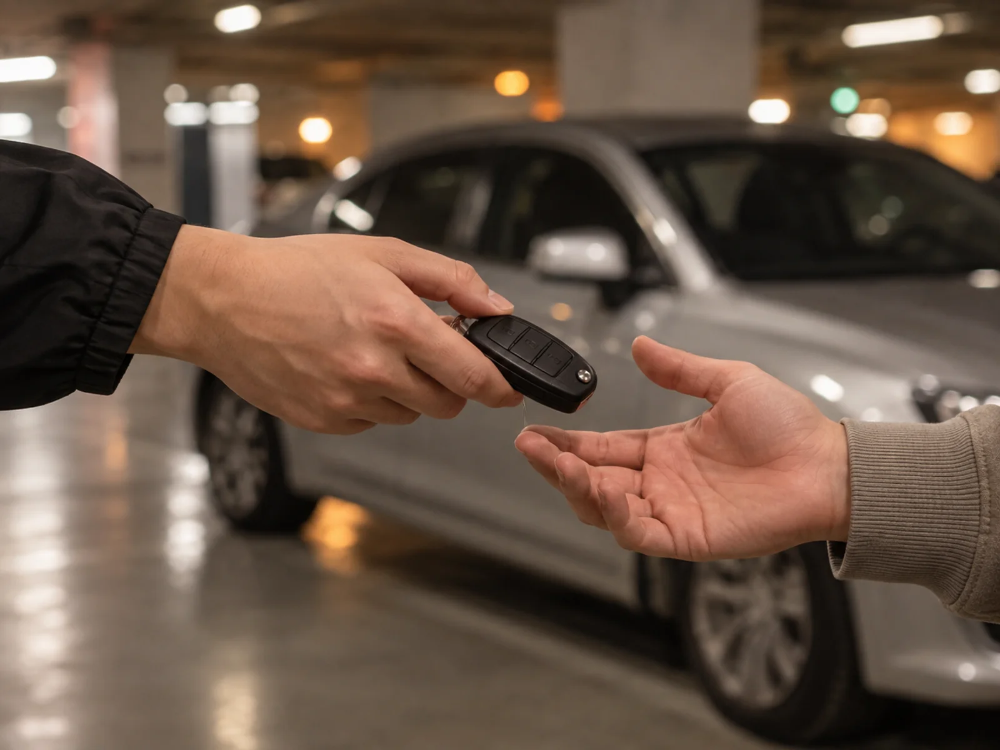
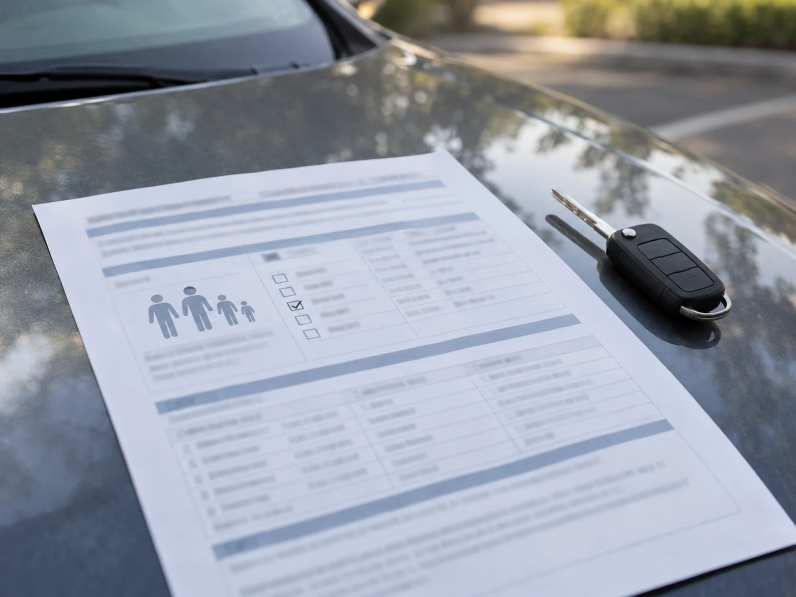
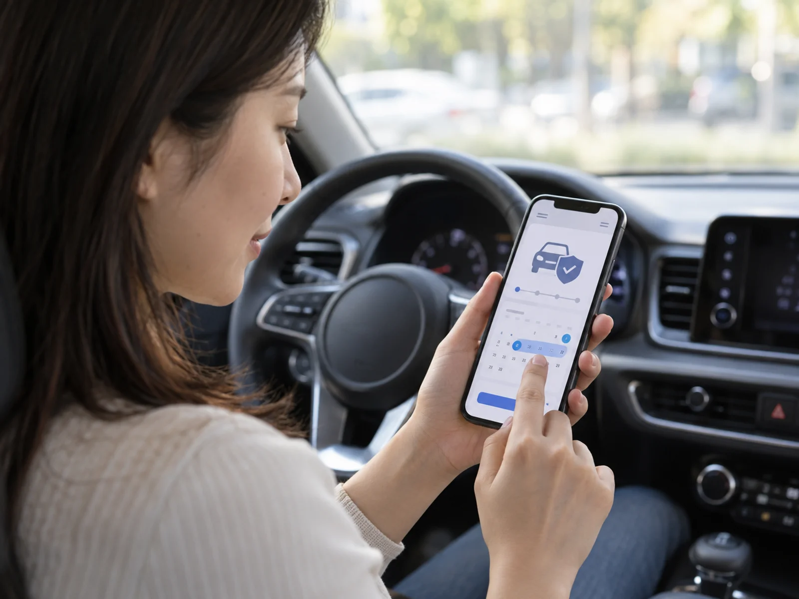
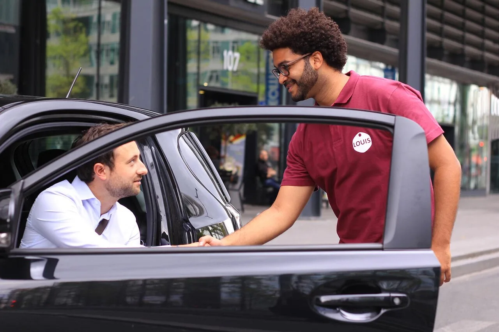
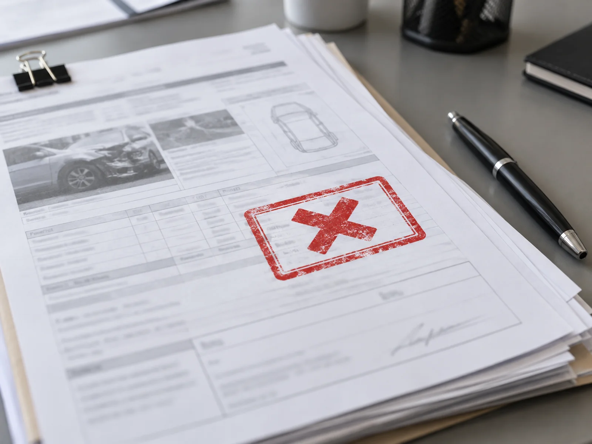

▲ 지정되지 않은 사람에게 차 키를 건네는 순간, 보험 보상 범위가 달라질 수 있다 ⓒ CarPrism (AI 생성 이미지)
가족운전자한정 특약에 가입해뒀으니 안심하고 있었는데, 정작 사고를 낸 사람이 '가족'이 아니라서 보상을 못 받는 경우가 있다.
형제자매, 처가·시댁 식구, 오래 사귄 애인이나 친구는 흔히 '가족'이라고 생각하지만 보험 약관상 가족의 범위는 훨씬 좁다. 범위를 벗어난 사람이 운전대를 잡았다가 사고가 나면, 보험사는 원칙적으로 대인배상Ⅱ·대물배상·자기차량손해를 보상하지 않는다.
이 글에서는 지정운전(가족운전한정) 특약이 왜, 어떤 경우에 보상을 거절하는지, 그리고 누구나운전 특약(단기운전자확대 특약)으로 이를 어떻게 피할 수 있는지, 대리운전·발렛파킹은 예외가 되는지까지 정리했다.
1. 지정운전 특약이란 — 가족한정과 뭐가 다른가
운전자 범위를 좁힐수록 보험료는 싸진다. 이 원리로 만들어진 것이 '운전자 한정 특약'이고, 범위에 따라 여러 단계로 나뉜다.
| 특약 | 운전 가능 범위 | 보험료(상대적) |
|---|---|---|
| 지정 1인 한정 | 기명피보험자(계약자) 본인만 | 가장 저렴 |
| 부부 한정 | 기명피보험자 + 배우자 | 1인 한정보다 소폭 높음 |
| 가족운전자 한정 | 기명피보험자 + 배우자 + 직계존비속(부모·자녀) + 며느리·사위 | 부부한정보다 높음 |
| 가족+지정 1인 추가 | 가족 범위 + 이름을 지정한 특정 1인(예: 형제, 애인, 동거인) | 지정 인원만큼 할증 |
| 누구나 운전(연령 한정만 적용) | 나이 조건만 맞으면 누구나 | 가장 비쌈 |

▲ 가족운전자한정 특약은 보험 계약서상 '가족'의 범위를 좁혀둔 상품이다. 그 범위를 벗어난 사람이 운전대를 잡으면 보상 조건이 달라진다 ⓒ CarPrism (AI 생성 이미지)
📍 '가족'의 법적 범위는 생각보다 좁다
손해보험협회 표준약관 기준 가족운전자한정 특약의 가족은 기명피보험자의 부모(양부모 포함), 배우자, 배우자의 부모(양부모 포함), 법률상·사실혼 배우자, 그 혼인관계에서 출생한 자녀(양자 포함), 며느리, 사위까지다. 형제자매·동거인·친구·애인은 포함되지 않는다. 소비자24에 접수된 실제 분쟁 사례에서도 가족한정 특약 가입 차량을 형이 운전하다 사고를 낸 건이 보상 대상에서 제외된 바 있다.
주의할 점이 하나 더 있다. 며느리·사위는 '법률혼' 관계에서만 가족으로 인정되며, 아직 혼인신고 전인 사실혼 관계의 예비 며느리·사위는 제외된다. 형제자매가 차량을 자주 운전한다면 매번 단기운전자확대 특약을 가입하기보다, 일부 보험사가 운영하는 '가족 및 형제자매 운전자 한정' 특약으로 아예 계약 자체를 바꾸는 편이 보험료 면에서 더 유리할 수 있다.
2. 보상 안 되는 실제 사례 — 왜 거절당하나
가족운전자한정 특약이나 지정 1인 한정 특약은 '피보험자'의 범위를 계약으로 좁혀둔 상품이다. 범위 밖의 사람은 애초에 그 보험계약의 피보험자가 아니므로, 사고를 내도 보험금 지급 대상 자체가 성립하지 않는다.
⚠️ 실제로 분쟁이 잦은 경우
· 형제자매가 가족한정 특약 차량을 운전하다 사고 — 가족 범위에서 제외되어 면책
· 지정 1인 한정 차량을 배우자나 자녀가 운전 — 지정된 1인이 아니므로 면책
· 잠깐만 빌려준다는 생각으로 친구·지인에게 운전을 맡긴 경우 — 특약 범위 밖이면 대인배상Ⅱ·대물배상·자차 모두 보상 제외가 원칙
다만 대인배상Ⅰ(책임보험)은 예외적으로 보상되는 경우가 많다. 자동차손해배상보장법상 최소한의 피해자 보호를 위한 강제보험이기 때문이다. 문제는 대인배상Ⅱ·대물배상·자기차량손해처럼 보상 규모가 큰 항목이 빠진다는 점이다 — 상대방 치료비·차량 수리비를 운전자가 개인적으로 물어줘야 할 수 있다는 뜻이다.
3. 누구나운전 특약(단기운전자확대) — 보험료와 가입 방법
명절에 형제가 잠깐 운전해야 하거나, 며칠간 친구에게 차를 맡겨야 할 때 쓰는 것이 '단기운전자확대 특약'이다. 흔히 '누구나운전 특약'으로 불린다.

▲ 기존 계약의 운전자 범위 밖 사람이 잠깐 운전해야 한다면 단기운전자확대 특약을 먼저 가입해야 한다 ⓒ CarPrism (AI 생성 이미지)
| 구분 | 단기운전자확대 특약 | 원데이 자동차보험 |
|---|---|---|
| 가입 주체 | 차량 소유자(기존 계약자) | 실제로 운전할 사람 본인 |
| 적용 대상 | 내 차를 다른 사람이 운전할 때 | 남의 차·렌터카·공유차를 내가 운전할 때 |
| 가입 기간 | 1일~28일(보험사별 상이, 최대 60일까지 가능한 곳도 있음) | 보험사·상품별로 6시간~10일 등 다양 |
| 운전자 나이 제한 | 대체로 없음 | 대부분 만 21세 이상 |
| 보험료 | 기간·차종에 따라 1일 수천 원대부터 | 상품·보장 범위에 따라 편차 큼 |
✅ 가입 방법 — 사고 나기 전에 끝내야 한다
· 보험사 다이렉트 앱·홈페이지에서 '단기운전자확대 특약' 또는 '임시운전자 특약' 메뉴를 찾아 기간을 선택
· 신용카드·계좌이체로 즉시 결제하면 당일부터 적용되는 경우가 많지만, 상품에 따라 신청 다음 날 0시부터 효력이 발생하기도 하므로 여유를 두고 미리 신청할 것
· 전화(고객센터 ARS)로도 가입 가능 — 앱 사용이 어려운 경우 이용
· 운전자 이름을 지정하지 않는 상품이 많아, 기간 중이면 누가 운전해도 보장되는 구조
자신이 가입한 보험사에 해당 특약이 있는지, 가입 전 조건을 먼저 확인하고 싶다면 다이렉트 페이지에서 바로 조회할 수 있다. 현대해상 단기운전자확대 신청 바로가기
4. 대리운전·발렛파킹은 예외로 인정될까
결론부터 말하면 둘의 처리 방식이 다르다. 대리운전은 제도가 개선돼 특약 가입자도 보상받을 길이 열려 있지만, 발렛파킹은 애초에 차주 보험이 아니라 발렛업체의 책임 문제로 다뤄지는 경우가 많다.
📍 대리운전 — 운전자한정 특약이어도 보험사가 먼저 보상
과거에는 운전자 범위를 제한한 특약 가입자가 대리운전 기사의 사고에 대해 보상받지 못하는 문제가 있었다. 이후 금융당국의 '대리운전 관련 보험서비스 개선방안'에 따라 대리운전 이용 중 사고가 나면, 운전자한정 특약 가입자라도 추가 보험료 부담 없이 차주의 보험사가 먼저 피해자에게 보상하고, 보험사가 대리운전업체(또는 기사)에 구상하는 구조로 바뀌었다. 다만 소속 업체가 없는 이른바 '길빵' 대리기사의 무보험 사고는 이 절차에서 제외될 수 있어 가급적 등록된 대리운전 업체를 이용하는 것이 안전하다.

▲ 발렛파킹 중 사고는 통상 발렛 업체의 배상책임보험으로 처리되며, 차주의 운전자한정 특약과는 별개로 다뤄진다 ⓒ Wikimedia Commons (Johanay / TeamCO2.net, CC BY-SA 4.0)
📍 발렛파킹 — 원칙은 '업체 책임', 다만 예외도 있다
식당·호텔 등에서 발렛(주차요원)에게 차를 맡겼다가 주차요원의 운전 미숙으로 사고가 나면, 그 사고는 통상 발렛파킹 업체(또는 운영 매장)의 배상책임 문제로 처리된다. 차주의 자동차보험 운전자한정 특약이 이 상황까지 보장하도록 설계돼 있지 않다는 뜻이다. 다만 업체가 무보험이거나 책임 소재가 불분명한 경우에는 분쟁이 길어질 수 있으므로, 발렛 이용 전 업체가 배상책임보험에 가입돼 있는지 확인하는 것이 좋다.
5. 가입 전 체크리스트

▲ 특약 범위 밖의 운전자가 사고를 내면 보험금 청구 서류 단계에서부터 보상 거절 사유가 확인된다 ⓒ CarPrism (AI 생성 이미지)
✅ 특약 가입·변경 전 반드시 확인할 것
· 내가 가입한 특약이 지정 1인/부부/가족 중 어디에 해당하는지 보험증권에서 먼저 확인
· '가족'의 범위에 형제자매·동거인은 포함되지 않는다는 점을 특히 주의
· 단기간만 다른 사람이 운전한다면 단기운전자확대 특약을 사고 전에 가입
· 대리운전은 등록된 업체를 이용해야 개선된 보상 절차의 보호를 받기 쉬움
· 발렛파킹은 업체의 책임보험 가입 여부를 이용 전에 확인
· 특약을 자주 바꿔야 하는 상황이라면, 아예 누구나 운전(연령 한정만 적용)으로 전환하는 것이 장기적으로 더 경제적일 수 있음
6. 요약
가족운전자한정 특약의 '가족'은 배우자·부모·자녀·며느리·사위까지만 인정되며, 형제자매나 동거인·친구는 제외된다. 이 범위를 벗어난 사람이 운전하다 사고를 내면 대인배상Ⅱ·대물배상·자기차량손해가 보상되지 않는 것이 원칙이다.
단기간 다른 사람에게 운전을 맡겨야 한다면 사고가 나기 전에 '단기운전자확대(누구나운전) 특약'을 가입해야 한다. 1일 단위로 보험사 앱·다이렉트에서 신청할 수 있다.
대리운전은 제도 개선으로 운전자한정 특약 가입자도 추가 보험료 없이 보상받을 수 있는 구조가 됐지만, 발렛파킹은 원칙적으로 발렛업체의 책임 문제로 다뤄진다는 점에서 둘의 처리 방식이 다르다는 것을 기억해두는 것이 좋다.